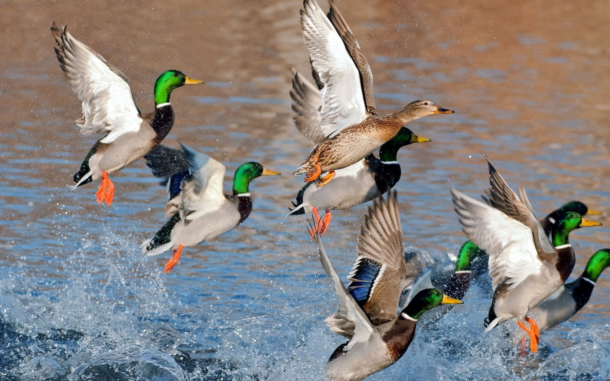

The Official Sportsman Blog | Sportsman Boats
2020.11.13 16:00
BOATS
Our Boats Open Heritage Masters Tournament Pricing Compare Dealers StoreMENU
Open Models
Open 352
Starting at $299,995
Open 322
Starting at $214,995
Open 302
Starting at $179,995
Open 282
Starting at $147,920
Open 282TE
Starting at $144,810
Open 252
Starting at $104,915
Open 242
Starting at $82,215
Open 232
Starting at $54,150
Open 212
Starting at $44,840
MENU
Heritage Models
Heritage 251
Starting at $104,540
Heritage 241
Starting at $82,950
Heritage 231
Starting at $54,910
Heritage 211
Starting at $45,555
MENU
Masters Models
Masters 267OE
Starting at $107,920
Masters 267
Starting at $107,920
Masters 247
Starting at $70,115
Masters 227
Starting at $44,800
Masters 207
Starting at $35,610
MENU
Tournament Models
Tournament 234
Starting at $51,090
Tournament 214
Starting at $40,715
Tournament 234 SBX
Starting at $44,895
Tournament 214 SBX
Starting at $35,350
The Official Sportsman Blog
What is a Boat s Draft?
March 3, 2020 Tips & TricksYour boats draft will be one of the major deciding factors of how shallow you can go in your boat; Sportsman Boats gives us the inside look at what draft is and what the best models are for your specific boat draft needs.
Read MoreCan I Drink & Drive My Boat?
February 24, 2020 Tips & TricksSummer fun is approaching quickly but remember as you stock up those coolers who s going to be the designated driver. Why you should never drive your boat under the influence!
Read MoreCan My Kids Drive My Boat?
February 17, 2020 Tips & TricksExploring the ins and outs of who should drive your Sportsman Boat.
Read MoreNMMA Recognizes Sportsman Boats as a 2019 Marine Industry Customer Satisfaction Index Award Recipient
February 14, 2020 Announcements News AwardsThe Marine Industry CSI Awards honors boat manufacturers who actively measure customer satisfaction and pursue continuous improvement.
Read MoreSportsman Boats Debuts Latest Flagship
December 12, 2019 NewsSportsman Boats unveils the company’s all-new Open 352 Center Console at the 8th Annual Dealer Sales Training Event.
Read MoreTop 5 Reasons To Boat In The Fall
November 6, 2019 Tips & TricksNow that summer is over, let s bring in the Fall season with plenty of boating in our schedule.
Read MoreNMMA President Visits Sportsman Boats
August 5, 2019 NewsFrank Hugelmeyer, president of the NMMA, spends some time touring our facilities in Summerville, SC.
Read MoreEco-friendly Cleaning Tips
April 22, 2019 Tips & TricksEnvironmental concerns should always be a top priority for every boater, let s touch up on some quick tips.
Read MoreHow To Maintain Aluminum & Powder Coating
April 15, 2019 Tips & TricksProper maintenance on aluminum and powder coated parts will ensure longevity.
Read MoreHow To Clean Your Bilge Compartment
April 8, 2019 Tips & TricksWith spring cleaning season in full swing, let s discuss proper bilge cleaning.
Read More ← 1 2 3 4 5 6 7Series
#SportsmanSummer2018 (4) Fishing 101 (9) Redfish Fishing with Tony Gaskin (7)Trending
Best Fly Rod and Reel Combos for Freshwater Fishing What is Trolling What is Spearfishing? What is Netting? What is Conventional Fishing? What is fly fishing? 7 Must-Haves for Marine Coolers and Our Top 6 Choices Types of Recreational Fishing Essential Boat Safety Checklist! Fishing 101 Series IntroductionOUR BOATS
SportTech® Hulls SportLink® Electronics Colors & Materials SeaStar Maximus NMMA Certification Discover BoatingPARTNERS
Introduction Yamaha Outboards Garmin JL AudioINFORMATION
Events Get a Brochure Owner's Manuals Testimonials WarrantyOFFICIAL STORE
Accessories Headwear Ladies Mens T-Shirts YouthRESOURCES
About Us Accessibility Blog Contact Sportsman Factory Tour Job Opportunities Photo Contest Login © 2020 Sportsman Boats - All Rights Reserved. - Sitemap WE USE COOKIES TO BRING YOU THE FINEST WEBSITE EXPERIENCE If you continue, we’ll assume you are happy to receive all cookies on our website. You can disable cookies at any time by changing your browser settings. Learn more about managing, viewing and deleting cookies here . Continue Your current browser is not supported.This page will not render properly.
Please use one of the supported browsers for the best user experience.
- Sportsman's Box - Home of the Hunters and Anglers ...
- Spillway Sportsman Blog
- Blog - Panteao Sportsman's Club
- Sportsman Open 212 | FishTalk Magazine
- Sportsman 267 OE: Prototyping Perfection | FishTalk Magazine
- Blog - Kodiak Sportsman's Lodge
- The Sportsman | Sports Stories That Matter
- Small Water Sportsman Blog — Small Water Sportsman
- Blog – Jackson County Sportsman Club
- The Official Sportsman Blog | Sportsman Boats
- Sportsman's Box - Home of the Hunters and Anglers ...
The Official Sportsman Blog. Sportsman Boats Debuts Latest Flagship. Posted December 12, 2019. News. Sportsman Boats unveils the company’s all-new Open 352 Center Console at the 8th Annual Dealer Sales Training Event. Top 5 Reasons To Boat In The Fall. Posted ...
- Spillway Sportsman Blog
Exeter, England, United Kingdom About Blog The Sportsman Gun Centre is the UK's largest shooting mail order and internet company, supplying to both the trade and retail markets. Subscribe to keep up with latest updates from this blog.
- Blog - Panteao Sportsman's Club
Bringing relevant and update information including tips, tricks and gear for you to enjoy!
- Sportsman Open 212 | FishTalk Magazine
When all was said and done and our test of the Sportsman 267 OE was complete, there was one thing which drove home our point that this prototype is not, in fact, the perfect boat. The Sportsman rep loaded the boat on a trailer, waved good-bye, and towed it back to South Carolina. Darn. Sportsman 267 OE Specifications: LOA – 26’7” Beam ...
- Sportsman 267 OE: Prototyping Perfection | FishTalk Magazine
Blog Pistol practice with friends and family. by jcsportsmansclub March 5, 2019 March 3, 2019. On a day when the guys are just practicing, its a good day to bring friends or family members. ... 2020 Jackson County Sportsman Club ...
- Blog - Kodiak Sportsman's Lodge
Sportsman Flyer LLC will be building just 20 of these frames for 2012, of which a handful will be full race models. Posted by NEWS at 9:10 PM 0 comments. Email This BlogThis! Share to Twitter Share to Facebook Share to Pinterest. Monday, September 5, 2011. Monark Style Forks.
- The Sportsman | Sports Stories That Matter
If you’re planning on hunting doves on a Louisiana wildlife management area, don’t bring along any lead shot this year. According to the Louisiana Department of Wildlife and Fisheries, only No. 6 non-toxic shot and smaller will be allowed for dove hunting during the 2017-18 season.
- Small Water Sportsman Blog — Small Water Sportsman
Panteao Sportsman’s Club Christmas Sale! Join the Panteao Sportsman’s Club and save 20% off our annual individual or family membership! Simply use code “XMAS20” during checkout on our website or stop in the office at the range.
- Blog – Jackson County Sportsman Club
Kodiak Sportsman’s Lodge is located in Old Harbor, Alaska, nestled behind Sitkalidak Island. We own four of the six sports fishing boats that operate in this 30-mile stretch of protected waters, making it …
- The Official Sportsman Blog | Sportsman Boats
The Official Sportsman Blog Best Fly Rod and Reel Combos for Freshwater Fishing May 20, 2020. Fishing 101. Fishing. Choosing the best fly fishing combo is a very important part of starting your career as a fly fishermen. We are going to dive into what to look for in a fly rod and reel package and what some of the best options are for your style ...
The Official Sportsman Blog. Sportsman Boats Debuts Latest Flagship. Posted December 12, 2019. News. Sportsman Boats unveils the company’s all-new Open 352 Center Console at the 8th Annual Dealer Sales Training Event. Top 5 Reasons To Boat In The Fall. Posted ...
Exeter, England, United Kingdom About Blog The Sportsman Gun Centre is the UK's largest shooting mail order and internet company, supplying to both the trade and retail markets. Subscribe to keep up with latest updates from this blog.
Bringing relevant and update information including tips, tricks and gear for you to enjoy!
When all was said and done and our test of the Sportsman 267 OE was complete, there was one thing which drove home our point that this prototype is not, in fact, the perfect boat. The Sportsman rep loaded the boat on a trailer, waved good-bye, and towed it back to South Carolina. Darn. Sportsman 267 OE Specifications: LOA – 26’7” Beam ...
Blog Pistol practice with friends and family. by jcsportsmansclub March 5, 2019 March 3, 2019. On a day when the guys are just practicing, its a good day to bring friends or family members. ... 2020 Jackson County Sportsman Club ...
Sportsman Flyer LLC will be building just 20 of these frames for 2012, of which a handful will be full race models. Posted by NEWS at 9:10 PM 0 comments. Email This BlogThis! Share to Twitter Share to Facebook Share to Pinterest. Monday, September 5, 2011. Monark Style Forks.
If you’re planning on hunting doves on a Louisiana wildlife management area, don’t bring along any lead shot this year. According to the Louisiana Department of Wildlife and Fisheries, only No. 6 non-toxic shot and smaller will be allowed for dove hunting during the 2017-18 season.
Panteao Sportsman’s Club Christmas Sale! Join the Panteao Sportsman’s Club and save 20% off our annual individual or family membership! Simply use code “XMAS20” during checkout on our website or stop in the office at the range.
Kodiak Sportsman’s Lodge is located in Old Harbor, Alaska, nestled behind Sitkalidak Island. We own four of the six sports fishing boats that operate in this 30-mile stretch of protected waters, making it …
The Official Sportsman Blog Best Fly Rod and Reel Combos for Freshwater Fishing May 20, 2020. Fishing 101. Fishing. Choosing the best fly fishing combo is a very important part of starting your career as a fly fishermen. We are going to dive into what to look for in a fly rod and reel package and what some of the best options are for your style ...
